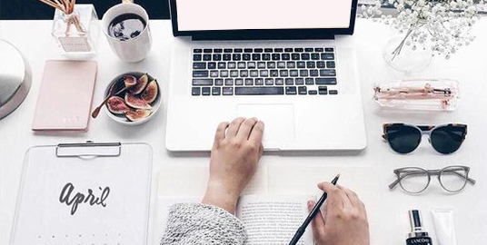
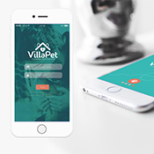
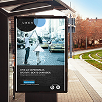
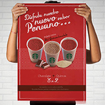
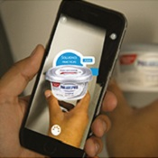
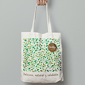

About me
Soy diseñadora publicitaria (comunicadora visual), mis trabajos son basado en el uso necesario dinámico del color, formalidad y cuidado en su diagramación lo cual definen también mi personalidad, amo el diseño el color y la pintura. Para mí cada empresa y marca es un contenido brillante dentro de un frasco el cual hay que mostrar visualmente lo más atractivo posible para que los clientes tengan ganas de abrirlo con ansias, esa presentación es la magia que hacemos.

Inspiration
, en mi identidad, use mis tres fortalezas o mejor dicho las palabras que definen lo que soy: DETALLISTA porque observo hasta lo más pequeño, ESTRATÉGICA, antes de poder lograrlo siempre pienso que no hay una buena solucion mientras no hay una buena investigación es la base para lograr una buena estrategia de comunicación, tener muchas opciones por las cuales caminar, SINCERIDAD porque es una de las cualidades principales en mi vida, junto con la sencillez y la honestidad porque es una de las maneras de ganarme la confianza y respeto de los demás.
Portfolio
MAGICAL SELFIE: Es una pagina creada recientemente en USA, es una estación de fotografía instantania para momentos especiales de compartir. EKOVIDA ORGANICS: Fué fundada en el año 2003 para convertirse en uno de los principales proveedores de soluciones alimenticias verdaderamente Orgánicas y Libres de Gluten para sus clientes.Son deliciosos Snacks elaboradas con yuca aceite de palma roja, pasta de albahaca, ají, aceituna y sal marina, crocantes, deliciosamente tentadoras 100% orgánicas. ALDO&co: Es una joyería prestigiosa en Perú, La revista muestra un poco la historia de Aldo, de la empresa y las distintas marcas internacionales con las cuales trabaja. VILLAPET: es un proyecto personal, es un APP de hospedaje, guardería para mascotas delivery, una ayuda muy practica, en el momento que estemos ausentes y no querramos dejar a nuestros hijos (mascotas) solos. MANGO: Mango muestras sus ultimas tendencias de invierno en Junio con las modelo Miranda Ker, el diseño tiene la misma linea visual, minimalista sencilla y elegante que transmite la marca.








